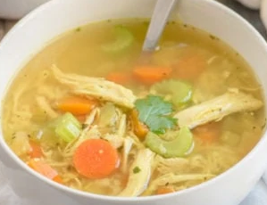

Chicken Soup
The best chicken soup you will ever eat in your life.

Ingredients
- 2–3 lb chicken thighs, breast, or a whole chicken
- 4 Cups organic chicken broth
- 6 Cups water
- 1/2 Cup onion, chopped
- 1 tsp fresh grated ginger
- 3-4 Cups carrots, chopped
- 2-3 Cups celery, chopped
- 6-8 Cloves garlic, minced
- 1 tsp gruond tumeric
- 1 tsp fish sauce
- 1/2 Tbsp basil
- 1/2 Tbsp parsley
- 3 Tbsp coconut aminos
- 1.5 tsp salt
- 1/4 tsp black pepper
Instructions
- Fill a large pot with water. Add the chicken and bring to a boil. Reduce heat and simmer for about 30 minutes or until fully cooked through.
- Prep the vegetables while the chicken is cooking.
- Remove the chicken and set aside.
- Add the broth and 6 cups of the water the chicken was cooked into a large stock pot. Add the onions, ginger, carrots, celery, garlic, and turmeric.
- Bring to a boil, then reduce heat to medium and cook, covered, for about 10 minutes.
- Shred the chicken, then addto the pot, along with the remaining ingredients: fish sauce, basil, parsley, coconut aminos, sea salt, and pepper.
- Bring the soup to a boil, then lower the heat and simmer, covered, until the vegetables are tender. Adjust the salt and pepper to taste.
Chef's Notes
Best chicken soup ever. See original recipe here.